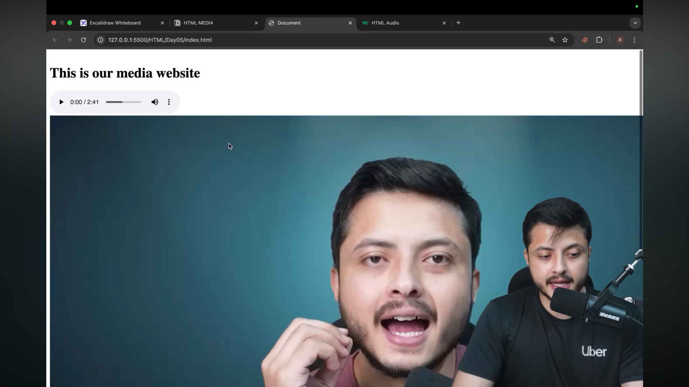
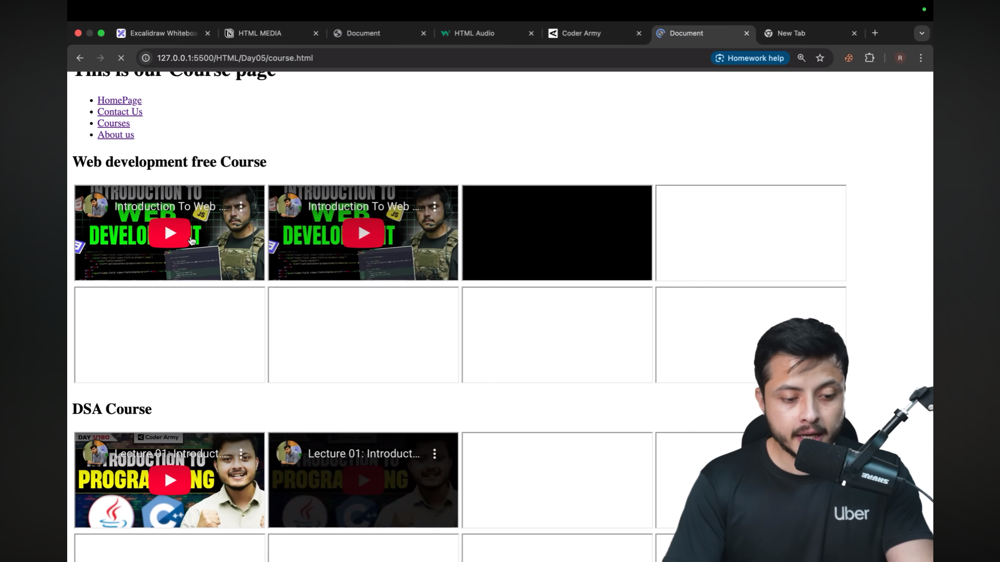

Lecture Video
Lecture Notes
This lecture covers how to embed multimedia (images, audio, video), use media tags, and how to deploy your multi-page website so it's live online.
-
Introduction
Overview of media elements in HTML and creating multi-page websites. -
Media Tag
HTML tags like <audio> and <video> are used to embed media files. -
Integrating Audio Files
You can embed audio using <audio src="file"> or multiple sources for compatibility. -
Adding Controls to Audio
Adding the controls attribute lets users play, pause, or adjust volume. -
Integrating Video Files
The <video> tag embeds video content directly in your webpage. -
Audio: Proper Formats
Use widely supported formats like MP3 or OGG for maximum browser compatibility. -
Why Proper Formats are Needed
Ensures audio/video plays correctly across different browsers and devices. -
Video: Proper Formats
Use MP4, WebM, or OGG to ensure videos play consistently in modern browsers. -
Embedding YouTube Videos
Use <iframe> to embed videos from YouTube or other platforms. -
Embed Tag & Its Importance
The <embed> tag allows embedding multimedia like PDFs, videos, or flash content. -
Allow Fullscreen in Videos
Adding the allowfullscreen attribute enables users to view videos in full screen mode. -
Multi-Page Websites
Websites can have multiple HTML pages linked together with <a> tags for navigation. -
Creating Multi-Page Websites
Use internal links to connect different HTML pages and create a cohesive site structure. -
Footer Section
The <footer> tag defines a footer with information like copyright or contact details. -
Creating Copyright Symbol
Use © to display the copyright symbol in HTML. -
Header Section
The <header> tag is used for the page header containing logos, navigation, or titles. -
Main Section
The <main> tag defines the main content of a webpage. -
Autoplay Feature
Adding the autoplay attribute plays audio or video automatically when the page loads. -
Combining iframes with Tables
You can embed iframes inside table cells to display external content in a structured layout. -
Deploying a Website on Netlify
Netlify allows hosting your website online easily by uploading your project folder. -
Homework
Practice embedding audio, video, and multi-page navigation in a sample website. -
Wrapping Up
Summarizes key points of media integration and multi-page site creation.
Screenshots
Here will go the topic list (with timestamps) and screenshots from the video for quick reference:
 